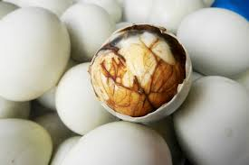

Balut (Fülöp-szigetek)
A Balut egy főtt kacsatojás, amelyben a embrió már kifejlődött.
Összetevők:
- Kacsatojás
- Fűszerek

Casu Marzu (Olaszország)
A Casu Marzu egy érett sajt, amelyet élő lárvák fogyasztanak.
Összetevők:
- Olasz juhsajt
- Étkezési lárvák

Hákarl (Izland)
A Hákarl egy fermentált cápahús, amelyet évekig érlelnek a föld alatt.
Összetevők:
- Finomságként elkészített cápahús
- Fermentálás
Fugu (Japán)
A Fugu egy pufferfish, amelyet egyes részeiben halálos méreg található.
Összetevők:
- Pufferfish hús
- Fűszerek